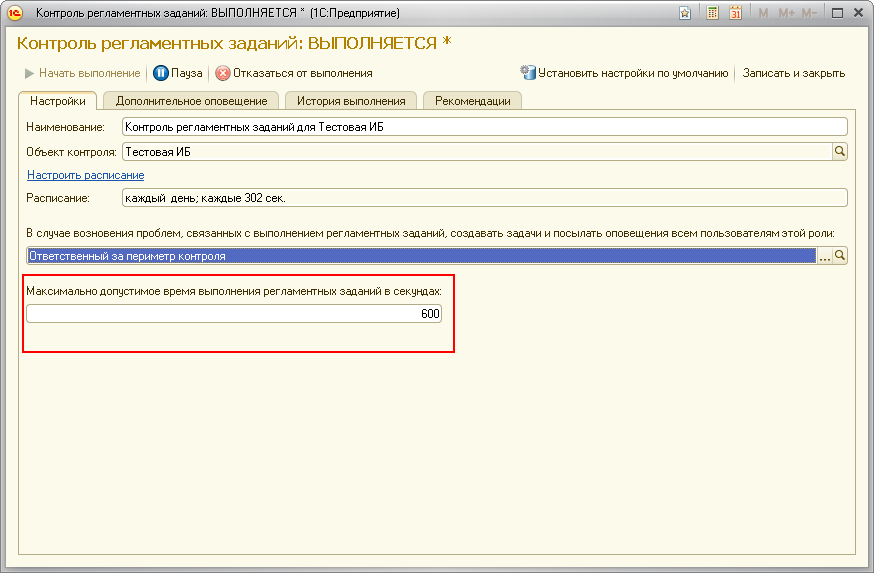
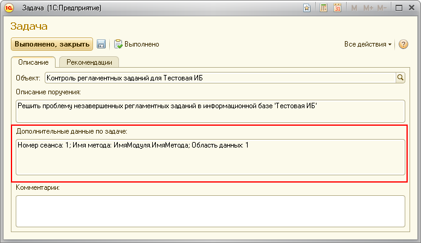

Данное сообщение означает, что в информационной базе обнаружены регламентные задания, которые выполняются дольше максимально установленного срока.

Для решения задачи необходимо обратиться к полю "Дополнительные данные по задаче".

В общем случае единственным способом решения проблемы является анализ кода метода, выполняемого при работе регламентного задания, а также воспроизведение ситуации, в результате которой возникает проблема.